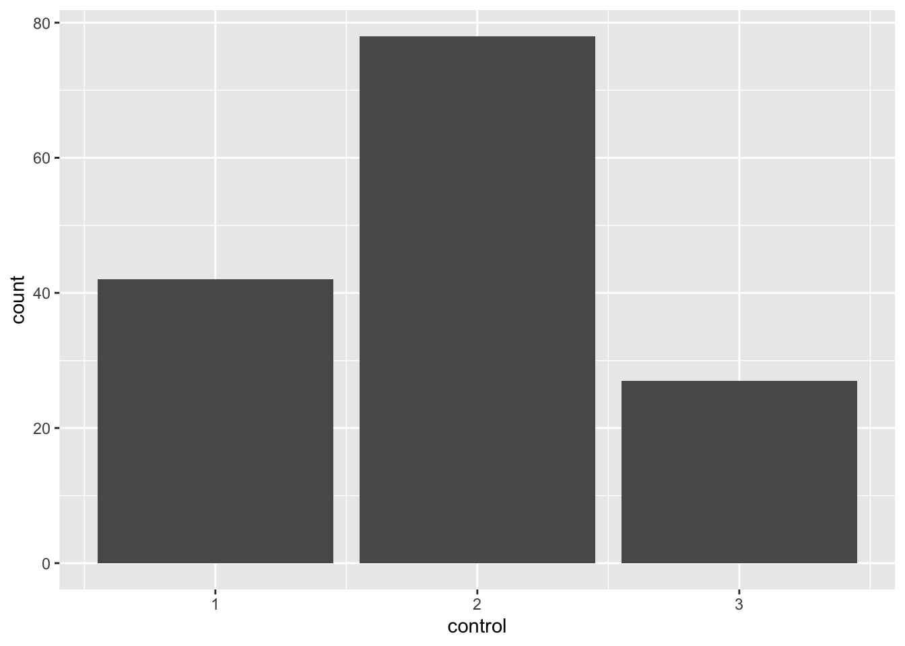
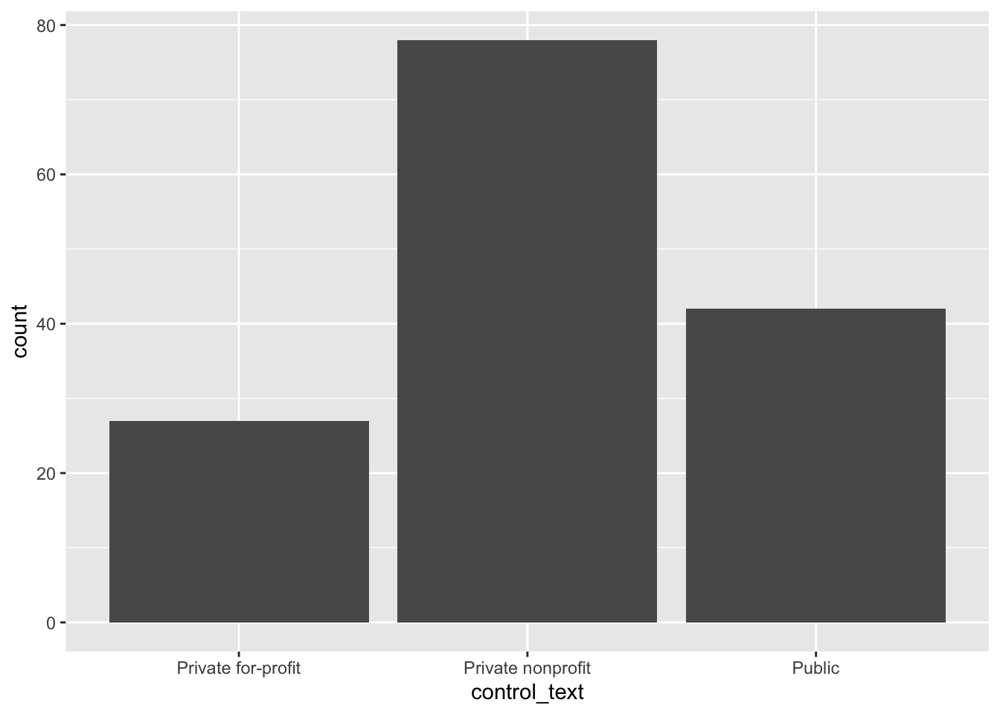

library(tidyverse)
library(rscorecard)
sc_key(Sys.getenv("SCORECARD_KEY")) # Replace Sys.getenv("SCORECARD_KEY") here with your API Key in quotation marks
scorecard <- sc_init() |>
sc_year(2024) |> #Note how we are looking at only 2024 data here!
sc_filter(stabbr == "MA") |> #Note how we are looking at only Massachusetts data here!
sc_select(unitid, instnm, city, highdeg, control, ugds, adm_rate, costt4_a, costt4_p, pcip27, pctfloan, admcon7, wdraw_orig_yr2_rt, cdr3) |>
sc_get()Lab 1: Understanding Datasets
Introduction
This lab is all about learning to understand the context and parts of a dataset by referencing and interpreting data dictionaries and technical data documentation.
Learning Goals
Read a data dictionary
Reference data documentation
Identify unique observations in a dataset
Understand different variable types
Look up value codes and recode a variable
Determine the number of missing values in a variable and why they are missing
Review of Key Terms
- Rectangular Datasets
-
datasets in which all rows are the same length, and all columns are the same length
- Observations
-
rows in a dataset; represent discrete entities we observe in the world
- Variables
-
columns in a dataset; describe something about an observation
- Vector
-
one-dimensional set of values that are all of the same type
- Data Frame
-
a list of vectors of equal lengths; typically organizes data into a two-dimensional table composed of columns (the vectors) and rows
- Unique Key
-
variable (column) in the dataset that can be used to uniquely identify each row
- Nominal categorical variables
-
variables that identify something else; sometimes, numbers are considered nominal categorical variables (e.g. zip code)
- Ordinal categorical variables
-
categorical variables that can be ranked or placed in a particular order (e.g. High, Medium, Low)
- Discrete numeric variables
-
numeric variables that represent something that is countable (e.g. the number of students in a classroom, the number pages in a book)
- Continuous numeric variables are variables
-
variables in which it is always possible to measure the value more precisely (e.g. time can be measured with infinite amount of specificity - hours > minutes > seconds > milliseconds > microseconds > nanoseconds …)
Scorecard Dataset
In his 2013 State of the Union Address, President Barack Obama announced his plans to create a “college scorecard” that would allow prospective students and parents to compare schools in terms of cost, offerings, diversity, completion rates, and post-graduate earnings. This data was first published in 2015 and since has undergone several improvements and revisions.
The College Scorecard dataset is massive. In fact, I thought long and hard about whether this was really the first dataset I wanted to introduce to you in a lab. It includes information about over 6500 institutions in the U.S., and has more than 3000 columns documenting information about those institutions. I chose this dataset for this lab because, if you can learn to read this data dictionary, you will be leaps and bounds ahead of the game in learning to read other data dictionaries. (It’s also just a super cool dataset, and hint, hint: you will get a chance to dive into it in much more detail in a few weeks). While the full data is available online, we are only going to work with a small subset of the data today.
Setting Up Your Environment
Install the RScorecard package by entering the following into your Console:
install.packages("rscorecard")Create a Scorecard API Key at this link. Shortly after you fill out the form, you will be emailed a key. Copy that key into code chunk below, replacing all of the following text in
sc_key(): Sys.getenv(“SCORECARD_KEY”). Be sure to wrap the key in quotation marks.Download the Scorecard Data Dictionary and Technical Documentation for Institution-Level Data Files here.
Run the code below to the import 2018 Scorecard data for Massachusetts into
R. Call me or one of the data assistants over if you get an error.
Glimpsing the Data
When working with very large datasets, we need tools to help us get a sense of the dataset without having to load the entire data frame. For instance, we can view the first 6 rows of the dataset by calling head().
head(scorecard)# A tibble: 6 × 15
unitid instnm city highdeg control ugds adm_rate costt4_a costt4_p pcip27
<int> <chr> <chr> <int> <int> <lgl> <lgl> <lgl> <lgl> <lgl>
1 164368 Hult Int… Camb… 4 2 NA NA NA NA NA
2 164447 American… Spri… 4 2 NA NA NA NA NA
3 164465 Amherst … Amhe… 3 2 NA NA NA NA NA
4 164492 Anna Mar… Paxt… 4 2 NA NA NA NA NA
5 164535 Assabet … Marl… 1 1 NA NA NA NA NA
6 164562 Assumpti… Worc… 4 2 NA NA NA NA NA
# ℹ 5 more variables: pctfloan <lgl>, admcon7 <lgl>, wdraw_orig_yr2_rt <lgl>,
# cdr3 <lgl>, year <dbl>str() provides a great deal of information about the observations in the data frame, including the number of variables, the number of observations, the column names, their data types, and a list of observations.
str(scorecard)tibble [147 × 15] (S3: tbl_df/tbl/data.frame)
$ unitid : int [1:147] 164368 164447 164465 164492 164535 164562 164580 164599 164614 164632 ...
$ instnm : chr [1:147] "Hult International Business School" "American International College" "Amherst College" "Anna Maria College" ...
$ city : chr [1:147] "Cambridge" "Springfield" "Amherst" "Paxton" ...
$ highdeg : int [1:147] 4 4 3 4 1 4 4 1 3 4 ...
$ control : int [1:147] 2 2 2 2 1 2 2 3 2 2 ...
$ ugds : logi [1:147] NA NA NA NA NA NA ...
$ adm_rate : logi [1:147] NA NA NA NA NA NA ...
$ costt4_a : logi [1:147] NA NA NA NA NA NA ...
$ costt4_p : logi [1:147] NA NA NA NA NA NA ...
$ pcip27 : logi [1:147] NA NA NA NA NA NA ...
$ pctfloan : logi [1:147] NA NA NA NA NA NA ...
$ admcon7 : logi [1:147] NA NA NA NA NA NA ...
$ wdraw_orig_yr2_rt: logi [1:147] NA NA NA NA NA NA ...
$ cdr3 : logi [1:147] NA NA NA NA NA NA ...
$ year : num [1:147] 2024 2024 2024 2024 2024 ...You can also click on the name of your data frame in your Environment panel in RStudio, and it will open a new tab in RStudio that displays the data in a tabular format. Try clicking on scorecard in your Environment panel.
Tip
This is the same as calling View(scorecard) in your Console.
Getting to Know this Dataset
Observations (Rows)
In starting our data analysis, we need to have a good sense of what each observation in our dataset refers to - or its observational unit. Think of it this way. If you were to count the number rows in your dataset, what would that number refer to? A unique key is a variable (or set of variables) that uniquely identifies an observation in the dataset. Think of a unique key as a unique way to identify a row and all of the values in it. There should never be more than one row in the dataset with the same unique key. A unique key tells us what each row in the dataset refers to.
Question
See if you can identify a unique key for this dataset. Write some lines of code to determine whether the column you’ve identified can act as unique key for the data. Hint: You need to check whether the values in the column ever repeat.
# Write code to calculate number of rows in scorecard
# Write code to calculate the number of unique values in the column you've identified as a unique key
# Do these numbers match?
Why not use name as a unique key?
Note that NAME is typically not an appropriate variable to use as a unique key. Let me provide an example to demonstrate this. When I worked for BetaNYC, I was trying to build a map of vacant storefronts in NYC by mapping all commercially zoned properties in the city, and then filtering out those properties where a business was licensed or permitted. This way the map would only include properties where there wasn’t a business operating. One set of businesses I was filtering out was restaurants. The only dataset that the city had made publicly available for restaurant permits was broken. It was operating on an automated process to update whenever there was a change in the permit; however, whenever a permit was updated, rather than updating the appropriate fields in the existing dataset, it was creating a new row in the dataset that only included the permit holder (the restaurant name), the permit type, and the updated fields. Notably the unique permit ID was not being included in this new row. We pointed this issue out to city officials, but fixing something like this can be slow and time-consuming, so in the meantime, we looked into whether we could clean the data ourselves by aggregating the rows that referred to the same restaurant. However, without the permit ID it was impossible to uniquely identify the restaurants in the dataset. Sure, we had the restaurant name, but do you know how many Wendy’s there are in NYC?
Anytime we count something in the world, we are not only engaging in a process of tabulation; we are also engaging in a process of defining. If I count the number of students in a class, I first have to define what counts as a student. If someone is auditing the class, do they count? If I, as the instructor, am learning from my students, do I count myself as a student? As I make decisions about how I’m going to define “student,” those decisions impact the numbers that I produce. When I change my definition of “student,” how I go about tabulating students also changes. Thus, as we prepare to count observations in a dataset, it is important to know how those observations are defined.
Question
At this point, you’ve probably figured out that each row in this dataset is a higher education institution. …but there are many different ways that we can define higher education institutions, and that will impact what gets included and excluded in our data. Referencing the Technical Documentation, locate a definition for the unit of observation in this dataset. What institutions are included, and what institutions are excluded? Summarize a definition below.
Variables (Columns)
Note the column names for this dataframe, and the kinds of values that appear in those columns. Some of them (like city and year) might make sense to you immediately. Others (like pcip27 and highdeg) might be much more confusing. To figure out what we are looking out, we are going to need to refer to the dataset’s data dictionary.
Open the data dictionary you downloaded in an earlier step. It will open as an Excel file. Click on the tab labeled “Institution_Data_Dictionary”. There are thousands of variables in this dataset, falling into the broader categories of school, completion, admissions, cost, etc. Note how the file is organized, and specifically draw your attention to:
Column 1 (NAME OF DATA ELEMENT): This is a long description of the variable and gives you clues as to what is represented in it.
Column 6 (VARIABLE NAME): This is the column name for the variable. This is how you will reference the variable in
R.Column 7 (VALUE): These are the possible values for that variable. Note that for many categorical variables, the values are numbers. We are going to have to associate the numbers with their corresponding labels.
Column 8 (LABEL): These are the labels associated with the values recorded for the variable.
Column 11 (NOTES): This provides notes about the variable, including whether it is currently in use and what missing values indicate.
Question
For each of the variable names in the scorecard data frame, look up the associated name in the data dictionary. You will need to search for the variable name in the sixth column of the data dictionary (I recommend using Ctrl-F to quickly locate the variable name in the spreadsheet.) Once you’ve found the variable name, reference column 1 to determine what this variable means, and reference columns 7 and 8 to see what possible values will appear in that column.
Identify one nominal variable, one ordinal variable, one discrete variable, and one continuous variable in scorecard and list their variable names below. Then uncomment the lines below and use the typeof() function to see how R determined their data types. Did any surprise you?
#typeof(scorecard$_____)
#typeof(scorecard$_____)
#typeof(scorecard$_____)
#typeof(scorecard$_____)Values (Cells)
You may have noticed that several categorical variables are coded as numbers in the imported dataset. For instance, look at the column control which designates the institution’s ownership. Running the code below, we see that the distinct values in that column are 1, 2, and 3.
unique(scorecard$control)[1] 2 1 3When we reference that column in the data dictionary (row 27), we see that a 1 in that column designates that the institution is Public, a 2 that the institution is Private nonprofit, and a 3 that the institution is Private for-profit. While I can always look that up, sometimes it is helpful to have that information in our dataset. For instance, let’s say I create a bar plot that’s supposed to show how many higher education institutions have each type of ownership in MA (which you will learn how to do soon!). The plot can be confusing when control is a series of numbers.
ggplot(scorecard, aes(x = control)) +
geom_bar()
With this in mind, sometimes it can be helpful to recode the values in a column. Recoding data involves replacing the values in a vector according to criteria that we provide. Remember how all columns in a data frame are technically vectors? We can use the recode() function to recode all of the values in the control vector. We are going to store the recoded values in a new column in our dataset called control_text. Check out the code below to see how we do this. Reference the help pages for recode (i.e. ?recode) to help you interpret the code.
scorecard$control_text <-
recode(
scorecard$control,
"1" = "Public",
"2" = "Private nonprofit",
"3" = "Private for-profit",
.default = NA_character_
)Check out our barplot now!
ggplot(scorecard, aes(x = control_text)) +
geom_bar()
Question
Write code below to recode the admcon7 variable and store the results in a new variable in scorecard called admcon7_text. You’ll need to look up the values in the data dictionary. If you’ve done this correctly, running this code should produce a barplot that displays multiple bars.
scorecard$admcon7_text <-
recode(
scorecard$admcon7,
#Fill replacements here
.default = NA_character_
)
ggplot(scorecard, aes(x = admcon7_text)) +
geom_bar() +
coord_flip()Missing Values
When we have missing values in a rectangular dataset, we have to provide a placeholder for the missing value in order for the dataset to remain rectangular. If we just skipped the value, then our dataset wouldn’t necessarily have rows of all equal lengths and columns of all equal lengths. In R, NA serves as that placeholder. Before we start analyzing data, it can be important to note how many NA values we have in a column so that we can determine if the data is representative.
The function is.na() checks whether a value is an NA value and returns TRUE if it is and FALSE if it isn’t. Providing a vector to is.na() will check this for every value in the vector and return a logical vector indicating TRUE/FALSE for every original value in the vector.
is.na(scorecard$wdraw_orig_yr2_rt) [1] TRUE TRUE TRUE TRUE TRUE TRUE TRUE TRUE TRUE TRUE TRUE TRUE TRUE TRUE TRUE
[16] TRUE TRUE TRUE TRUE TRUE TRUE TRUE TRUE TRUE TRUE TRUE TRUE TRUE TRUE TRUE
[31] TRUE TRUE TRUE TRUE TRUE TRUE TRUE TRUE TRUE TRUE TRUE TRUE TRUE TRUE TRUE
[46] TRUE TRUE TRUE TRUE TRUE TRUE TRUE TRUE TRUE TRUE TRUE TRUE TRUE TRUE TRUE
[61] TRUE TRUE TRUE TRUE TRUE TRUE TRUE TRUE TRUE TRUE TRUE TRUE TRUE TRUE TRUE
[76] TRUE TRUE TRUE TRUE TRUE TRUE TRUE TRUE TRUE TRUE TRUE TRUE TRUE TRUE TRUE
[91] TRUE TRUE TRUE TRUE TRUE TRUE TRUE TRUE TRUE TRUE TRUE TRUE TRUE TRUE TRUE
[106] TRUE TRUE TRUE TRUE TRUE TRUE TRUE TRUE TRUE TRUE TRUE TRUE TRUE TRUE TRUE
[121] TRUE TRUE TRUE TRUE TRUE TRUE TRUE TRUE TRUE TRUE TRUE TRUE TRUE TRUE TRUE
[136] TRUE TRUE TRUE TRUE TRUE TRUE TRUE TRUE TRUE TRUE TRUE TRUEWhen we sum() across a logical vector, R will calculate the number of TRUE values in the vector.
sum(is.na(scorecard$wdraw_orig_yr2_rt))[1] 147# Note that this is the same as:
scorecard$wdraw_orig_yr2_rt |> is.na() |> sum()[1] 147Question
In a code chunk below, calculate the number of missing values in both the costt4_a and the costt4_p columns. Reference the NOTES column in the data dictionary to determine why there are so many NA values in these columns. Add a comment to the code chunk below, explaining the reason for missing values in these columns.
# Write code here
# Add comment here
Ethical Considerations
Referencing the College Scorecard data documentation, see if you can determine which students are included in calculations of earnings and debt. How might the data’s coverage bias the values that get reported? What might be the social consequences of these biases? Share your ideas on our sds-192-discussions Slack channel.
Submission
- When you are done, save your .qmd file in RStudio.
- Stage, commit, and push your file in the Git pane. Refer to step 12 in our Course Infrastructure setup for a reminder of how to do this.
- Navigate back to GitHub.com and click on the .qmd files to make sure you see your changes to the files there. If you don’t see the changes there, I won’t see them either!